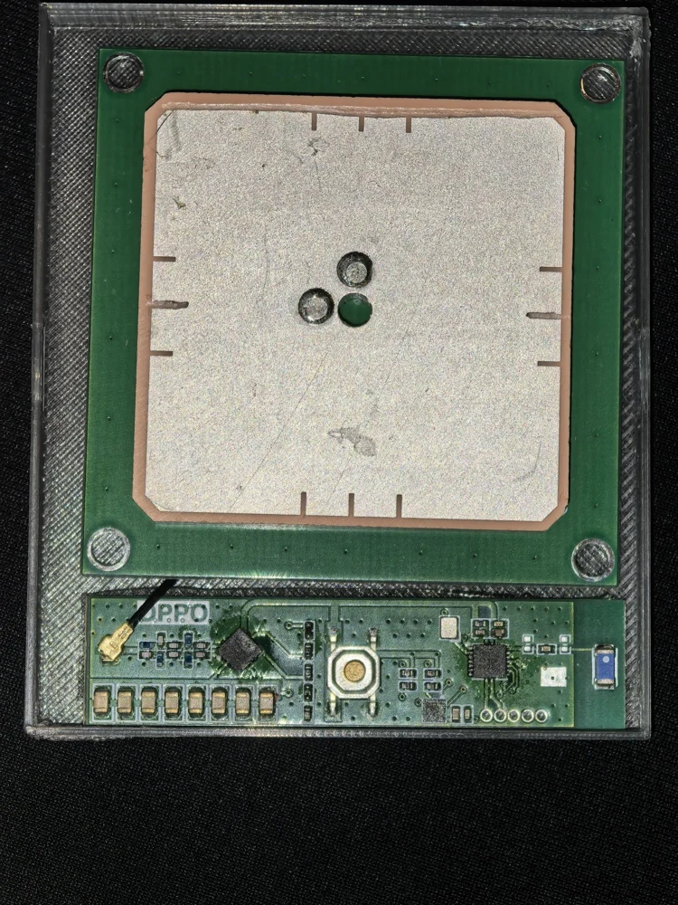
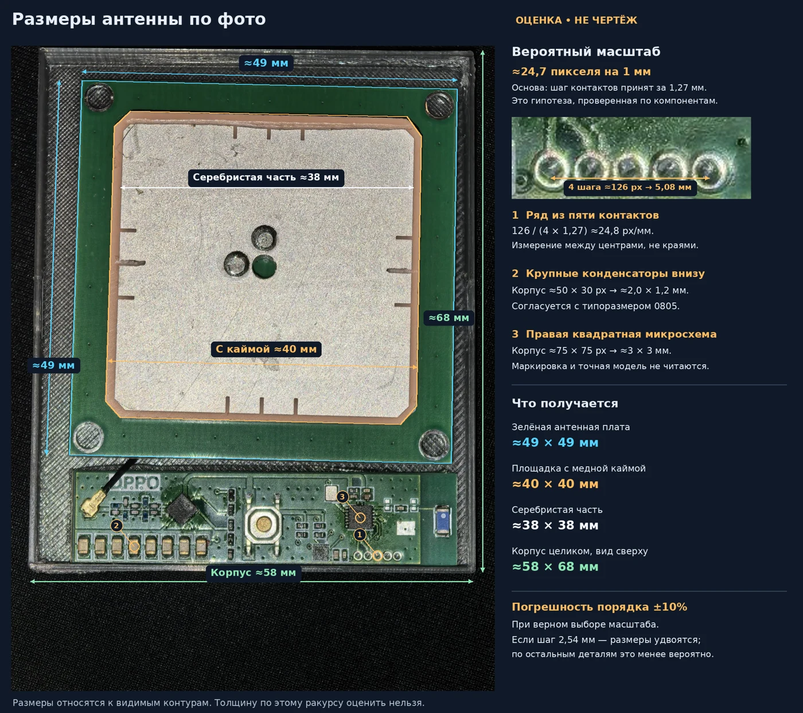
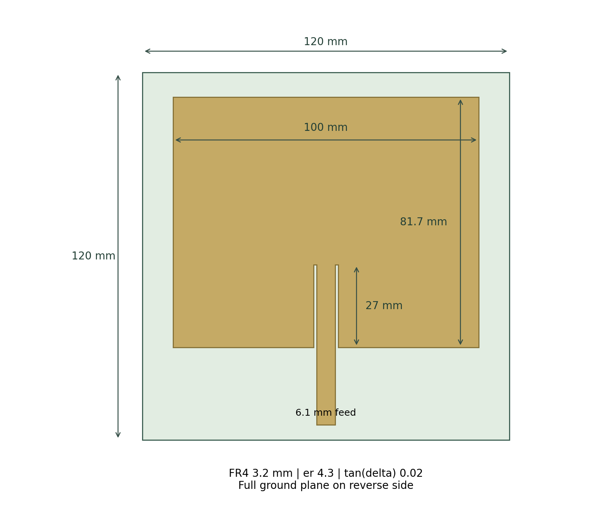
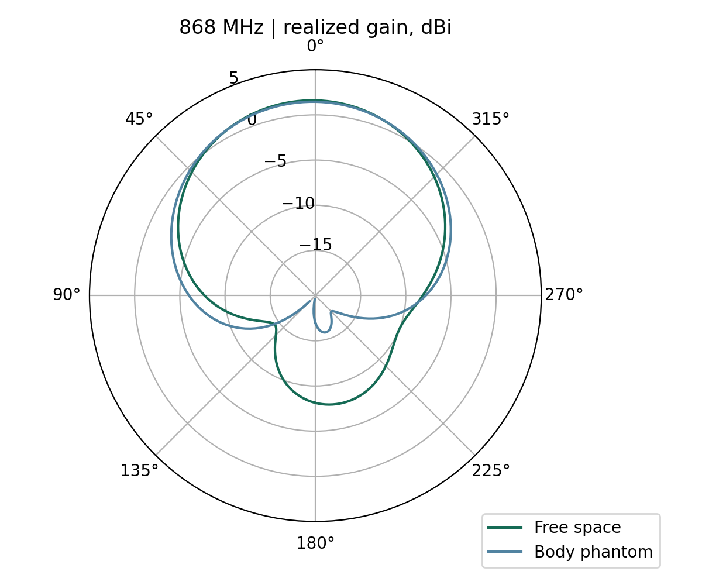
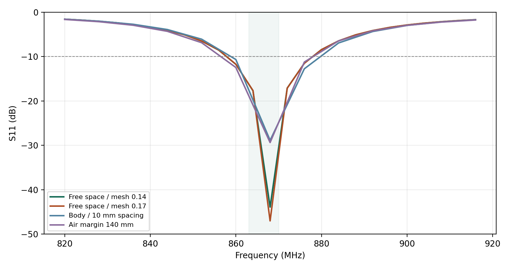
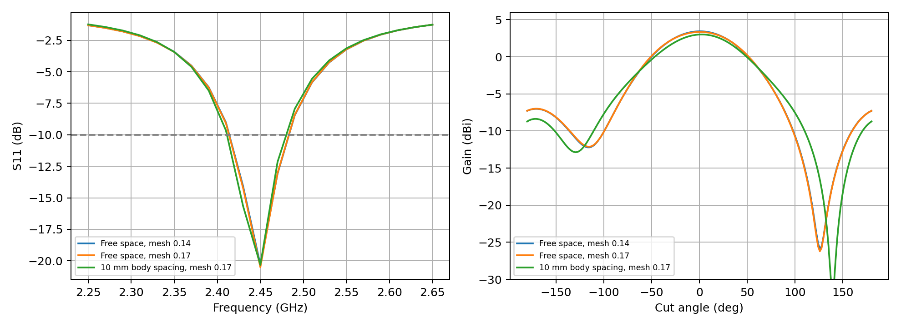
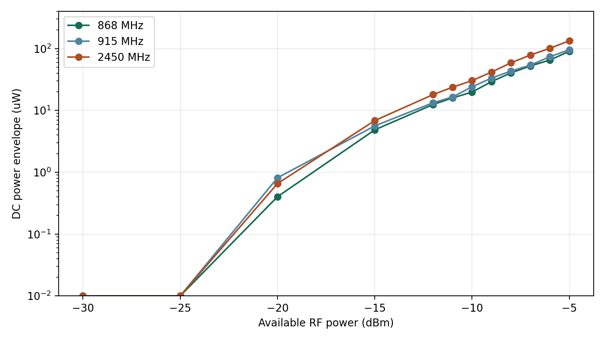
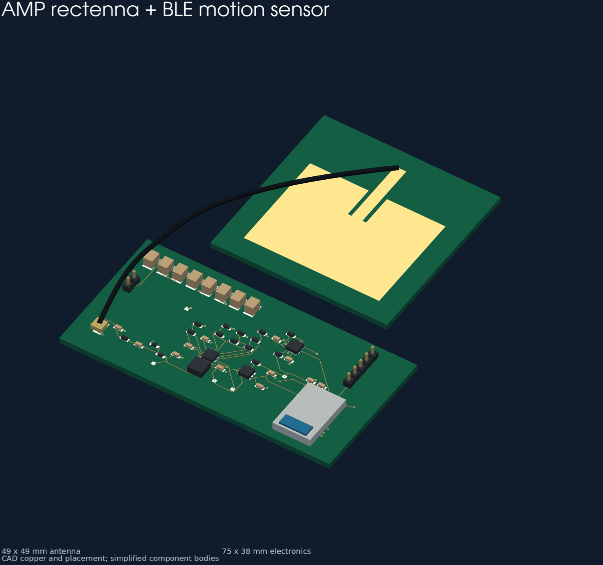
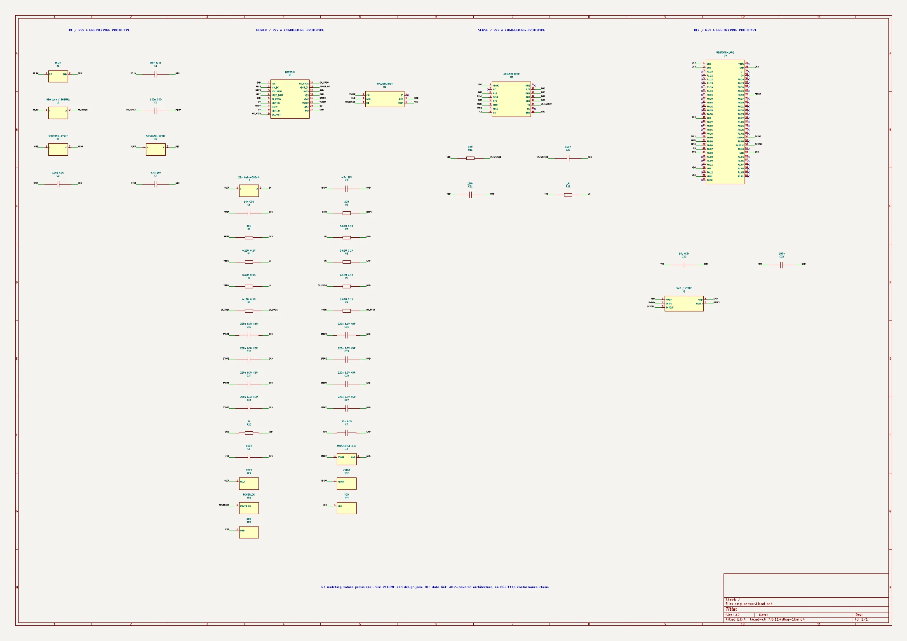

Датчик может позволить себе паузу.
Передатчик понемногу пополняет запас энергии. Датчик просыпается, записывает движение, отправляет результат и снова ждёт. Именно такой ритм делает устройство без батареи правдоподобным.
С исходным устройством есть одна полезная определённость: оно работает. Гораздо меньше известно о стенде вокруг него. На каком расстоянии стоял передатчик? Сколько времени занимала запись? В телефон уходил весь сигнал или несколько чисел? Эти подробности сильно меняют бюджет. Ниже мы соберём собственный вариант и проследим путь энергии от антенны до сообщения.
В основе нового варианта — антенна 868 МГц на FR4 120 × 120 × 3,2 мм. Её можно изготовить как обычную двухслойную плату и соединить коаксиалом с электроникой. За доступность материала приходится платить потерями: модель даёт около 38% эффективности излучения. Одного красивого минимума S11 здесь недостаточно.
Для ориентира возьмём выделенный источник: EIRP 1 Вт, расстояние 1 м, запитка 90% времени и запас потерь 6 dB. У нового FR4-варианта получается около 33,1 мкВт в накопитель — достаточно для короткого отчёта примерно раз в 30 с после запуска. Обычный Wi-Fi-трафик в рассмотренных сценариях этого не обеспечивает. Параметры здесь заданы нами; мощность исходного стенда неизвестна.
Где мы сейчас. Антенны рассчитаны, схема и платы подготовлены, соединения проверены. Следующий шаг — изготовление и измерения. Прежде всего нужно увидеть холодный запуск, снять реальную энергию сеанса и проверить, какие движения различает датчик.
Начнём с того, что видно.




Уточнённая разметка заметно сузила поиск: излучатель занимает около 38–40 мм, вся антенная подложка — примерно 49 × 49 мм. Для обычного FR4 это маловато на 868 МГц. Зато керамический патч такого размера вполне реален — ниже найдутся и серийные аналоги. До точного артикула по одной фотографии всё же не добраться.
| Наблюдение | Рабочая интерпретация | Что остаётся неизвестным |
|---|---|---|
| Ряд светлых деталей | Вероятно MLCC 0805, около 2 × 1,2 мм | Номиналы, остаточная ёмкость при DC-bias и соединение между собой |
| Дорожки от конденсаторов идут к ИС | Согласуется с PMIC, который управляет накопителем | Маркировка и точная схема включения |
| Центральная металлическая деталь | Тактовая кнопка около 5 мм по уточнённой разметке | Её назначение в сценарии демонстрации |
| Коаксиал и отдельная антенна | Разделение RF-приёмника энергии и электроники | Согласование, поляризация и потери кабеля |
Особенно хочется разгадать ряд конденсаторов: кажется, что именно там скрыт ответ на вопрос о времени работы. Но у похожих снаружи MLCC ёмкость может различаться на порядок, а под напряжением заметно уменьшаться. Восемь условных деталей по 10–100 мкФ при 20–60% остаточной ёмкости дают всего 22–660 мкДж в окне 3,0 → 2,5 В. Такой запас вполне может обслуживать короткие действия, пока передатчик продолжает подпитывать устройство.
Сообщение о демонстрации на встрече IEEE согласуется с направлением проекта 802.11bp: официальный scope прямо предусматривает WPT ниже 1 ГГц. Источник IEEE не устанавливает именно 868 МГц для этого устройства; здесь это выбранная инженерная частота.
Как складывается один рабочий цикл.
Сначала работает только тракт питания. Антенна принимает RF-сигнал, два диода выпрямляют его, а BQ25504 заряжает конденсаторы. При достижении примерно 3,00 В ключ TPS22917 подаёт питание на датчик и контроллер. Теперь можно собирать отсчёты и выходить на связь. Нижний порог, 2,50 В, завершает сеанс: нагрузка отключается, накопление продолжается.
| Узел | Реализация | Роль в проекте |
|---|---|---|
| RF/DC | SMS7630-079LF × 2, 100 пФ C0G, L1 68 нГн | Начальная настройка удвоителя для 868 МГц |
| Управление энергией | BQ25504 + 22 мкГн | Сбор энергии, MPPT и контроль напряжений |
| Накопитель | 8 × 220 мкФ, 1210, 6,3 В X5R | 1,76 мФ номинально; в бюджете 0,88 мФ эффективно |
| Нагрузка | TPS22917 + ADXL362 + MDBT50Q-1MV2 | Измерение движения и BLE-связь с телефоном |
| Наладка | SWD, тестовые точки, вход STORE | Контролируемый предварительный заряд и измерение тока |
Для отладки мы отвели электронике 75 × 38 мм и поставили более крупные конденсаторы 1210. Так проще измерять, менять детали и выяснять, куда уходит энергия; уменьшить плату можно после этих опытов. С телефоном устройство общается по BLE. От проекта 802.11bp здесь взята идея RF-питания; его PHY/MAC в этой схеме не реализованы.
Антенна из обычного стеклотекстолита.
Если разрешить плате вырасти до 120 мм, задача становится гораздо удобнее. Помещается прямоугольный патч, под ним — сплошной экран. Конструкция понятна, доступна для изготовления и оставляет место для подстройки.

| Параметр | Значение |
|---|---|
| Плата / диэлектрик | 120 × 120 × 3,2 мм; FR4, εr = 4,3, tanδ = 0,02 |
| Излучатель | 100 × 81,7 мм; отступ сверху 8 мм |
| Питание | Врезка 27 мм; линия 6,1 мм; боковые зазоры 1 мм; порт 50 Ом |
| S11 на 868 МГц | -43,9 dB в уточнённой модели |
| Усиление / эффективность | 1,61 dBi / 38% в свободном пространстве |
| Проверка у тела | 1,46 dBi; S11 -28,9 dB, условный фантом с зазором 10 мм |
Согласование: что меняется при проверках модели
Расчёт EMerge. Наведите указатель на график; кривые можно скрывать.
На графике легко увлечься глубиной провала: около −44 dB выглядит отлично. Однако S11 отвечает только за отражение от входа. Дальше энергия всё ещё может рассеяться в материале. У выбранного FR4 это существенная статья потерь — отсюда эффективность около 38%, несмотря на хорошее согласование.


Что именно проверено
Основной расчёт выполнен с параметром разрешения 0,14, сравнительный — 0,17. Отдельно увеличен запас воздушной области со 100 до 140 мм. Условный блок тканей имеет размеры 120 × 120 × 25 мм, εr = 38 и tanδ = 0,30; до нижнего экрана оставлен зазор 10 мм. Эта модель показывает чувствительность конструкции, но не воспроизводит анатомию человека.
В металле принято приближение PEC. В модели экран доходит до края платы, а в KiCad имеет отступ 0,25 мм. Коаксиальный переход, реальные проводники, корпус, маска на линии и распределённый вход выпрямителя в FEM не включены. Поэтому после изготовления настройка VNA остаётся частью работы. Разброс εr FR4 на несколько десятых способен сместить резонанс на десятки мегагерц.
Сходимость оценивается по комплексному S11. Вблизи очень глубокого нуля небольшое изменение отражённой волны выглядит большим скачком в децибелах. Максимальная разность комплексного S11 между двумя сетками: 0,0075. Увеличение воздушной области даёт S11 около −29,4 dB и усиление 1,82 dBi на 868 МГц: чувствительность к границе больше, чем к последнему уточнению сетки. Поэтому глубину −44 dB нельзя считать устойчивой точностью прогноза. Полные результаты и влияние границы приведены в машиночитаемой сводке.
FR4 или готовая керамика.
| Вариант | Габарит | Что установлено | Ограничение |
|---|---|---|---|
| FR4, 868 МГцНовая разработка | 120 × 120 × 3,2 мм | FEM, KiCad, DRC, модель бюджета | Материальные потери; нужен известный стек |
| Taoglas ISMP.868.35.6.A.02Готовая керамика | 35 × 35 × 6 мм | Паспортные 2,17 dBi и >65% на земле 70 × 70 мм | Характеристики на 49 × 49 мм не подтверждены |
| KYOCERA AVX 9000468Готовая керамика | 36 × 36 × 6 мм | Паспортные 1 dBi и 54% на земле 70 × 70 мм | Аналогичное требование к опорной земле |
| FR4, 2,45 ГГцСравнительный прототип | 49 × 49 × 1,6 мм | FEM: −20,3 dB на 2,45 ГГц, пик в сечении 3,43 dBi | Не доказывает частоту исходного устройства |
| FR4, 915 МГцПредыдущая гипотеза | 100 × 110 × 1,6 мм | FEM: −21,0 dB на 915 МГц, пик в сечении −0,88 dBi | Низкая эффективность тонкого FR4; иной диапазон |
Оба пути имеют смысл. Керамический патч лучше укладывается в габарит исходного устройства; у FR4-платы вся геометрия открыта и её можно менять самостоятельно. Покупная антенна экономит работу над резонатором, но оставляет интеграцию: земля, кабель, корпус и близость тела всё равно влияют на результат.
Taoglas и KYOCERA описывают свои изделия как ceramic patch. Подтверждённый LTCC-пример — Johanson 0868AT43A0020001E, 7 × 2 × 0,8 мм, с эффективностью 26% на фирменной EVB. Это другая антенная конструкция, а не маленькая равноценная замена патчу.
Керамические кандидаты имеют RHCP. При линейной поляризации передатчика идеальная потеря CP ↔ linear составляет 3 dB. Новая FR4-антенна линейно поляризована; при её развороте относительно линейного источника потери также могут быть значительными. Выбор поляризации должен входить в бюджет, а не оставаться примечанием к каталогу.
Закупочная доступность и другие кандидаты
При проверке Mouser показывал Taoglas в наличии, с минимальным заказом 1 шт. Это не резерв и не подтверждение доставки. Abracon ARRRN5-868.000MHz интересен готовой сборкой 40 × 40 × 8 мм со своей землёй, но проверенный DigiKey больше его не поставляет. AC-D868N405 близок по размеру 40 × 40 × 5 мм, однако условия измерений и наличие подтверждены хуже. Подробности, ссылки и оговорки сохранены в отдельной записке COTS.

После антенны начинается нелинейная часть.
Модель в ngspice использует два SMS7630-079LF, источник 50 Ом, индуктивность корпуса 0,7 нГн на диод и Q = 40 согласующего дросселя. Перебраны номиналы согласования, входная мощность −30…−5 dBm и выходные напряжения 0,13 / 0,2 / 0,4 / 0,6 / 0,7 В.
| Частота | Стартовый L1 | При −10 dBm, выходе 0,2 В |
|---|---|---|
| 868 МГц | 68 нГн, C1 DNP | 19,85 мкВт DC; около 19,85% |
| 2,45 ГГц | 10 нГн, C1 DNP | 30,34 мкВт DC; около 30,34% |
Здесь есть любопытный результат: выбранный выпрямитель на 2,45 ГГц оказался эффективнее, чем на 868 МГц, в одной и той же испытанной точке. Противоречия нет. Более низкая частота помогает доставить RF-мощность до антенны, а диоды и согласующая цепь решают, какая её доля станет постоянным током. Поэтому L1 нужно подбирать уже на собранной плате.

Фиксация выходного напряжения в SPICE имитирует рабочую точку преобразователя. Динамика запуска BQ25504 и заряд большого банка так не моделируются. Для бюджета к огибающей дополнительно применены 70% эффективности boost и коэффициент реализации 0,70. Этот запас не превращает модель в гарантированную нижнюю границу.
Холодный запуск — отдельная задача. BQ25504 требует порядка 600 мВ типично и 15 мкВт типично для старта; после запуска способен работать от меньшего напряжения. Проверка мощности при зажиме 0,7 В — лишь предварительный фильтр. На плате предусмотрен вход контролируемого предварительного заряда.
В этой ревизии выполнены отдельные FEM- и SPICE-расчёты. Полная совместная модель кабеля, площадок, дорожек, нелинейного входа, MPPT и реального WPT/OFDM-сигнала пока отсутствует. RF-разводка электроники требует измерения и настройки, даже при нулевой DRC.
Двадцать секунд записи.
Затем — время на подзарядку.
Представим полезный сеанс: датчик двадцать секунд записывает движение, вычисляет результат и отправляет несколько чисел в телефон. Такой сценарий гораздо легче обеспечить энергией, чем непрерывную передачу всей записи.
Во время сбора заложено 40 мкВт: датчик — 9, сохранение памяти MCU — 9, обработка и FIFO — 12, ключ — 1,5, запас — 8,5 мкВт. Ожидание PMIC, утечки банка и платы оценены ещё в 2,5 мкВт. Это целевые статьи бюджета будущей прошивки, а не измеренные токи готового изделия.
Исследуйте условия запитки
Friis, прямая видимость, синусоидальная RF-модель. Изменения рассчитываются локально в браузере.
Период относится к установившемуся режиму после запуска. EIRP и duty — параметры сценария, не утверждение о разрешённом режиме в конкретной стране. Вариант с фантомом уже включает его модельное влияние на усиление; дополнительные потери задаются отдельно.
| Сценарий, расстояние 1 м | Среднее в накопитель | Период отчёта |
|---|---|---|
| FR4, 868 МГц · EIRP 20 dBmDuty 90%; другие потери 6 dB | 1,90 мкВт | Не поддерживается |
| FR4, 868 МГц · EIRP 30 dBmDuty 90%; другие потери 6 dB | 33,08 мкВт | 30 с |
| FR4, 868 МГц · EIRP 36 dBmDuty 90%; потери 6 dB; RF выше диапазона модели, DC ограничена последней точкой | 39,80 мкВт | 25 с |
| Wi-Fi 2,45 ГГц · EIRP 20 dBmDuty 50%; другие потери 6 dB | 0,057 мкВт | Не поддерживается |
| WPT 2,45 ГГц · EIRP 30 dBmDuty 90%; другие потери 6 dB | 5,931 мкВт | 268 с |
Передать результат дешевле, чем всю запись.
В нашем банке принято 0,88 мФ эффективной ёмкости. Между порогами 3,0006 и 2,50 В это 1,212 мДж, или 0,969 мДж после двадцатипроцентного резерва. Сеанс с коротким BLE-сообщением оценён в 0,92 мДж. Он помещается почти впритык — лишние пробуждения и повторы передачи уже имеют значение.
Сырая запись 100 Гц × 3 оси × 2 байта × 20 с — это 12 кбайт. Для сеанса с установлением соединения, обработкой и передачей заложено 6 мДж. Одним разрядом выбранный банк такой сеанс не обеспечивает: требуется около 5,45 мФ эффективной ёмкости либо передача порциями с подзарядкой и сохранением RAM. При полном отключении питания запись в RAM теряется.
Номинальные 220 мкФ не равны эффективным 220 мкФ при рабочем напряжении. Значение 0,88 мФ для банка нужно подтвердить по DC-bias выбранного артикула и измерением. То же относится к 120 мкДж, выделенным на запуск и короткую передачу.
От рисунка схемы — к плате.
Вариант электроники на 868 МГц выделен в самостоятельную папку проекта. Его согласующий дроссель уже имеет значение 68 нГн; в сравнительном проекте 2,45 ГГц сохранены 10 нГн. Топология питания, датчик, контроллер и трассировка остались общими.

120 × 120 мм; два слоя, FR4 3,2 мм.

75 × 38 мм; два слоя, FR4 1,6 мм.




Физические проверки дали 0 нарушений и 0 неподключённых площадок. В базовом проекте сверены 48 компонентов и 136 подключённых выводов между спецификацией, схемой и PCB. Для 868-МГц варианта проверены совпадение цепей и заменённый номинал. Библиотеки посадочных мест включены в архив.
Детали, которые важны при сборке
У SMS7630-079LF маркировочная полоска обозначает анод: в проектном SC79 контакт 1 = A, 2 = K. Верхний порог накопителя около 3,283 В оставляет небольшой запас до допустимого питания ADXL362 с учётом допусков. Выбранные делители — 0,1%; пороги требуют проверки. Вход STORE предназначен для ограниченного источника 3,0 В, не для USB/5 В. SWD во время измерений потребления должен быть отключён. Фронт питания, разряд выхода и минимальное время полного выключения ADXL362 проверяются осциллографом.
Дыхание увидеть проще.
С пульсом придётся поработать.
ADXL362 привлекателен прежде всего экономностью: он умеет собирать отсчёты в FIFO, пока контроллер спит. Если закрепить устройство на груди, разумно начать с дыхательных движений. Сердечные микродвижения слабее, а случайное смещение корпуса легко их перекрывает. Здесь качество крепления и алгоритма становится не менее важным, чем выбор микросхемы.
В обычном режиме шум ADXL362 порядка 550 µg/√Hz; в режиме пониженного шума — до 175 µg/√Hz, но с большим потреблением. Разрешение 1 mg/LSB и эти характеристики не позволяют обещать устойчивую регистрацию слабой сейсмокардиограммы. Здесь подготовлена аппаратная платформа, а не подтверждённый алгоритм медицинского измерения.
FIFO содержит 512 записей отдельных каналов — примерно 170 полных XYZ-отсчётов. При 100 Гц его необходимо обслуживать приблизительно раз в секунду. Внутренняя температура относится к кристаллу и не заменяет откалиброванную температуру кожи.
Альтернативы меняют компромисс: ADXL367 даёт меньший ток и 0,25 mg/LSB, но требует другого корпуса и схемы; ADXL355 обеспечивает существенно меньший шум ценой примерно 200 мкА, то есть около 0,6 мВт при 3 В. Такой переход требует нового энергетического бюджета.
Что покажет первый собранный экземпляр.
| Уровень доказательства | В этой работе |
|---|---|
| Наблюдение | Исходное устройство работает; габарит оценён по фото и предоставленной разметке |
| Расчёт | EMerge S-параметры и дальнее поле; ngspice RF/DC; модель накопления и нагрузки |
| CAD-проверка | Схема разбирается KiCad; DRC и сверка цепей; воспроизведение базового проекта из генераторов |
| Физическое измерение | Для предложенных плат пока не выполнено. Все графики антенн здесь расчётные |
- Проверить питание без RF.Ограниченный источник на STORE, пороги включения/отключения, OV, ток ожидания, время разряда и фронт VDD.
- Измерить накопитель в рабочей точке.DC-bias, утечки и реальная энергия между порогами. Затем скорректировать длительность сеанса.
- Измерить антенну и переход.VNA в сборке с кабелем и корпусом, в свободном пространстве и у тела. Проверить частоту и эффективный приём.
- Настроить всю ректенну.Калиброванная RF-мощность → DC → время холодного старта. Подстройка L1/C1 и испытание реальных WPT/OFDM-сигналов.
- Измерить энергию прошивки.Запуск, FIFO, обработка, BLE-соединение и повторы. После этого — оценка дыхания и ЧСС с опорным сигналом.
Готовые файлы предназначены для инженерной проверки и изготовления отладочной ревизии после проверки стека и RF-участка. Нулевая DRC не подтверждает RF-КПД, холодный запуск, точность датчика или соответствие 802.11bp.
Можно открыть, проверить и повторить.
В архиве — схемы, платы, использованные посадочные места, BOM, скрипты, исходные снимки, Touchstone, численные массивы, графики, рендеры, SPICE-deck и журналы расчётов. Промежуточные поисковые варианты сохранены и отделены именами от итоговых. Бинарные инструменты и скачанные руководства производителей не переиздаются: для них приведены оригинальные ссылки.
Новый вариант: fr4_868_final, проверки: fr4_868_refined / body / boundary. Электроника: hardware/868/. Старые initial / refined / fine / compact / uhf_* — история исследования, не дополнительные измерения. Окружение и версия исходного кода.
В каталоге — иллюстрации, данные и вложения, которые можно открыть отдельно. Полные скрипты и журналы лежат в ZIP-пакете.
| Файл | Размер |
|---|
Документы, на которые опирается проект.
Свойства компонентов взяты из документов производителей; параметры демонстратора, которых там нет, оставлены неизвестными. Модели и предположения проекта не выданы за паспортные характеристики исходной платы.
- IEEE P802.11bp — scope проекта и WPT sub-1 GHz
- OPPO — Ambient Power-enabled IoT White Paper
- TI BQ25504 — запуск, пороги и MPPT
- TI TPS22917 — ключ питания
- Skyworks SMS7630 — модель диода и SC79
- Analog Devices ADXL362
- Analog Devices ADXL367
- Analog Devices ADXL355
- Raytac MDBT50Q-1MV2
- Nordic nRF52840 — радио и потребление
- Taoglas — керамический патч 868 МГц
- KYOCERA AVX 9000468
- Johanson — LTCC-антенна 868 МГц
- Abracon — каталог антенн
- Murata — высокоёмкие MLCC